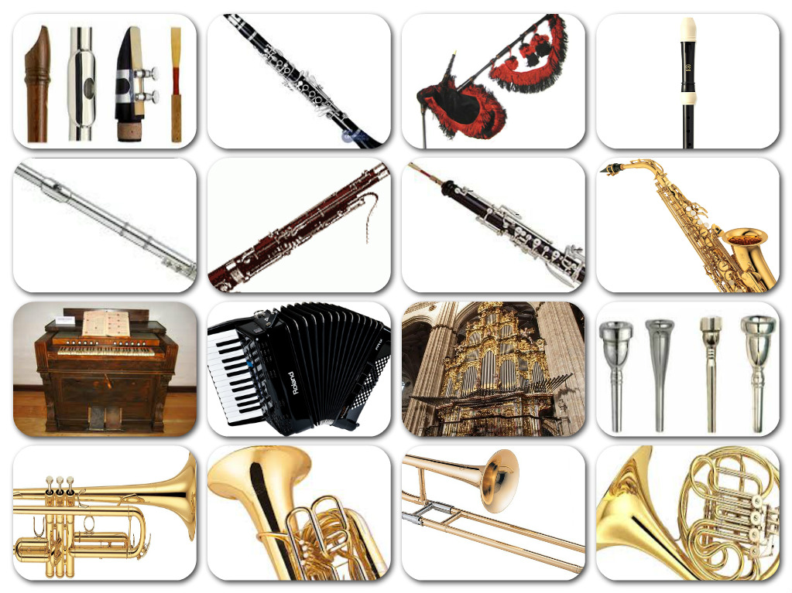
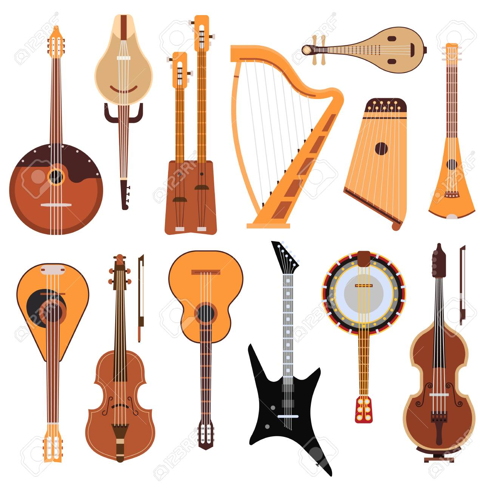
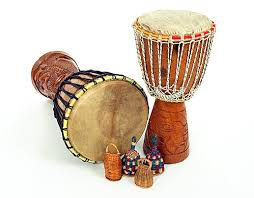
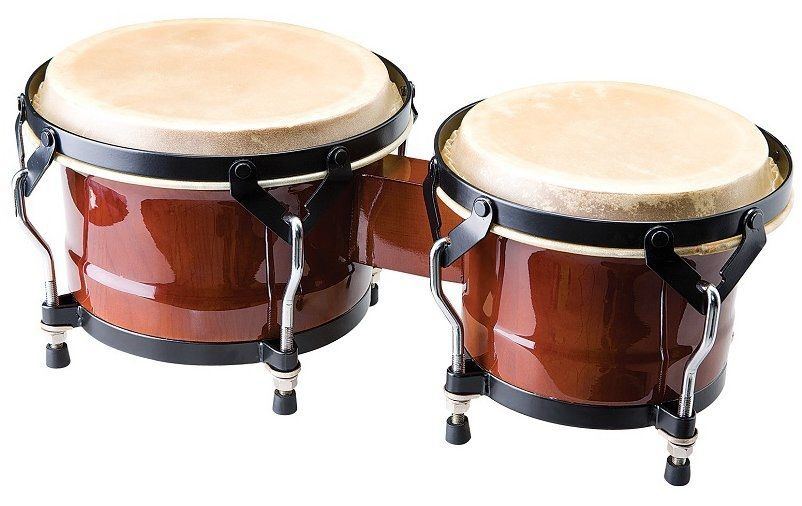
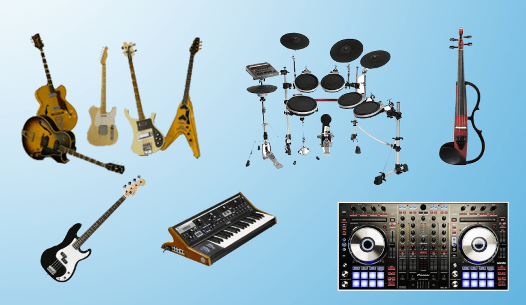

Los instrumentos musicales están categorizados, según el sistema Hornbostel-Sachs, por cinco grupos principales: Aerófonos, Cordófonos, Idiófonos, Membranófonos y Electrófonos .
Los aerófonos usan el aire para producir sonido (flautas, trompetas), Los aerófonos, también conocidos como instrumentos de viento,son aquellos que producen sonido a través de la vibración del aire dentro de un cuerpo. Estos instrumentos no utilizan cuerdas, membranas ni el cuerpo del instrumento para generar el sonido, sino que se basan en la columna de aire que vibra. Clasificación de los Aerófonos: Los aerófonos se pueden clasificar de diversas maneras, pero una de las más comunes es por su mecanismo de producción sonora: Aerófonos de bisel o flautas: El aire choca contra un borde afilado, haciendo vibrar la columna de aire. Los ejemplos incluyen la flauta traversa y la flauta dulce. Aerófonos de lengüeta simple: Una lengüeta vibrante es la que produce el sonido, como en el clarinete. Aerófonos de lengüeta doble: Dos lengüetas vibran juntas para generar el sonido, como en el oboe. Aerófonos de boquilla: Los labios del músico vibran contra una boquilla, produciendo el sonido, como en la trompeta. Ejemplos de aerófonos: Flauta: Puede ser de madera o metal, con diferentes tamaños y formas. Clarinete: Instrumento de viento madera con lengüeta simple. Oboe: Instrumento de viento madera con lengüeta doble. Trompeta: Instrumento de viento metálico con boquilla. Trombón: Instrumento de viento metálico con vara deslizante. Tuba: Instrumento de viento metálico de gran tamaño. Saxofón: Instrumento de viento madera con boquilla y lengüeta.
los cordófonos tienen cuerdas vibrantes (guitarras, violines) Los cordófonos suenanInstrumentos musicales que producen sonido a través de la vibración de cuerdas.. Estas cuerdas, usualmente tensadas entre dos puntos del instrumento, se hacen vibrar al ser pulsadas, frotadas o percutidas. La caja de resonancia del instrumento ayuda a amplificar el sonido resultante. Tipos de cordófonos: Cordófonos de cuerda pulsada : La vibración se produce al pulsar o puntear las cuerdas, ya sea con los dedos o con una púa. Ejemplos: guitarra, arpa, laúd, charango. Cordófonos de cuerda frotada : Se utilizan un arco para frotar las cuerdas, produciendo la vibración. Ejemplos: violín, violonchelo, contrabajo. Cordófonos de cuerda percutida : Las cuerdas vibran al ser golpeadas por martillos, usualmente activadas por un teclado. Ejemplos: piano, clavicordio. Otros nombres: Los cordófonos también son conocidos como instrumentos de cuerda. Clasificación adicional: Los cordófonos se pueden clasificar como cítaras (simples) o como arpas y laúdes (compuestos). Ejemplos comunes: La guitarra, el violín y el piano son ejemplos muy conocidos de cordófonos.
los idiófonos vibran en su totalidad (triángulos, xilófonos) Los idiófonos soninstrumentos musicales donde el sonido se produce por la vibración del propio cuerpo del instrumento. A diferencia de otros instrumentos que utilizan cuerdas, membranas o columnas de aire para generar sonido, los idiófonos vibran en su totalidad. Características principales de los idiófonos: Vibración propia: El sonido se origina por la vibración del material del instrumento, ya sea madera, metal, piedra, etc. Sin cuerdas, membranas ni columnas de aire: No se requieren elementos como cuerdas, membranas tensas (parches) o columnas de aire para producir sonido. Diversidad de materiales: Pueden estar hechos de una amplia variedad de materiales, incluyendo madera, metal, vidrio, huesos, cuernos e incluso piedra, según Extrema Percusión y la Wikipedia . Ejemplos de idiófonos: De golpe: maracas, castañuelas, claves, xilófono, triángulo, platillos, etc. De frotación: Güiro, carraca. De sacudimiento: Sonajeros, cascabeles. Punteados: Kalimba (o mbira). Entrechocados: Castañuelas, crótalos. Otros: Marimba, teponaxtli, matraca, entre otros, según la SACM y Memoria Chilena .
los membranófonos usan membranas tensas (tambores), Los membranófonos sonInstrumentos musicales que producen sonido a través de la vibración de una membrana tensa, generalmente hechos de piel de animal o material sintético.. Se clasifican dentro de los instrumentos de percusión y se subdividen en membranófonos percutidos, frotados, o de otro tipo, dependiendo de cómo se haga vibrar la membrana. Clasificación de los membranófonos: Membranófonos percutidos: El sonido se produce golpeando la membrana con las manos, baquetas o mazos. Ejemplos comunes son el bombo, la caja, el tambor y la conga. Membranófonos frotados: El sonido se genera al frotar la membrana con las manos, una vara o un cordón. La zambomba es un ejemplo de este tipo de membranófono. Otros membranófonos: Algunos membranófonos se hacen vibrar por soplado o por otros métodos. Características adicionales: La membrana puede estar hecha de piel de animal o materiales sintéticos. La forma del cuerpo del instrumento puede variar, incluyendo cilindros, vasos o calabazos. Los membranófonos se encuentran en una gran variedad de culturas y contextos musicales, desde música tradicional hasta música popular y clásica. Ejemplos de membranófonos: Tambores: Incluyen una amplia gama de tipos, como tambores de marco, tambores cilíndricos y tambores de copa. Panderetas: Consisten en un aro con membranas estiradas sobre él, a menudo con sonajas. Tarasca: Es un tipo de tambor ceremonial utilizado en algunas culturas. Bongos: Son dos tambores pequeños que se tocan juntos. Timbals: Son tambores de gran tamaño que se utilizan en orquestas.
los electrófonos producen sonido electrónicamente (sintetizadores, guitarras eléctricas).Los electrófonos sonInstrumentos musicales que producen sonido principalmente a través de medios eléctricos o electrónicos.. Se pueden clasificar en dos grupos principales: aquellos que amplifican sonidos acústicos y aquellos que generan sonido electrónicamente. Tipos de Electrófonos: Instrumentos acústicos amplificados electrónicamente: Estos instrumentos, como la guitarra eléctrica, el bajo eléctrico y el violín eléctrico, utilizan medios mecánicos tradicionales para generar el sonido, pero lo amplifican y modifican mediante componentes electrónicos. Instrumentos electrónicos: Estos instrumentos, como los sintetizadores y los teclados, generan sonido a partir de señales eléctricas, ofreciendo una amplia gama de posibilidades sonoras. Ejemplos de Electrófonos: Theremín : Un instrumento electrónico que se toca sin contacto físico, controlando el sonido a través de movimientos cerca de antenas. Sintetizador : Un instrumento que genera sonidos a partir de señales eléctricas, permitiendo crear una gran variedad de timbres y efectos. Guitarra Eléctrica : Una guitarra que utiliza pastillas para convertir la vibración de las cuerdas en señales eléctricas, amplificadas luego por un altavoz. Bajo Eléctrico : Similar a la guitarra eléctrica, pero con cuerdas más gruesas y usualmente tocado con los dedos. Teclados : Instrumentos que pueden reproducir sonidos pregrabados de otros instrumentos o generar sonidos propios mediante síntesis. Órgano Hammond : Un instrumento electromecánico que utiliza ruedas fónicas para generar sonido, amplificado luego electrónicamente. Batería Electrónica : Un instrumento que utiliza almohadillas sensibles al tacto para generar sonidos de batería pregrabados.
